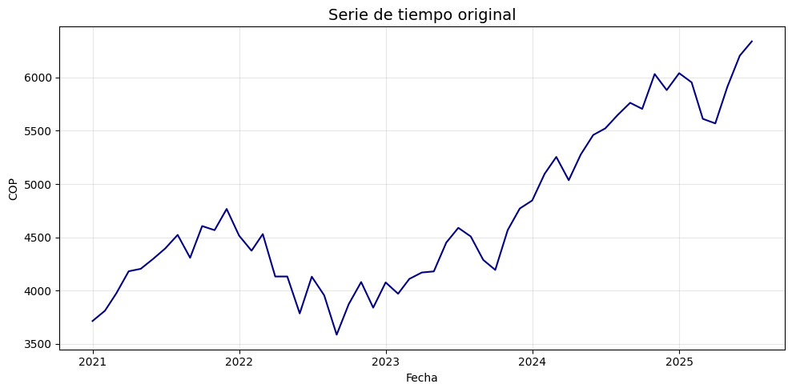

Métodos de suavizado#
En numerosos contextos de análisis y pronóstico, resulta esencial estimar la tendencia de una serie de tiempo. Este componente puede ser relevante en sí mismo —al reflejar la evolución de largo plazo de la variable— o bien constituir un paso previo para lograr la estacionariedad de la serie mediante la eliminación de dicha tendencia.
Los métodos de suavizamiento se utilizan para reducir el ruido y las fluctuaciones de corto plazo, permitiendo así revelar el comportamiento subyacente y persistente de la serie. De esta manera, facilitan la identificación y el modelado de la tendencia.
Suavizado Exponencial Simple (SES):#
El suavizado exponencial simple (SES) fue propuesto a finales de los años 50 (Brown, 1959; Holt, 1957; Winters, 1960) y constituye la base de algunos de los métodos de pronóstico más utilizados en la práctica.
La idea central es generar pronósticos como promedios ponderados de las observaciones pasadas, donde los pesos decrecen exponencialmente con el tiempo. Esto implica que:
Las observaciones recientes tienen mayor influencia en el pronóstico.
Las observaciones más lejanas tienen menor peso, aunque nunca desaparecen completamente.
Este enfoque ofrece un procedimiento rápido, confiable y flexible para una amplia gama de series de tiempo, lo que explica su éxito en aplicaciones industriales y académicas.
Comparación con métodos básicos:
Antes de introducir SES, recordemos dos métodos simples:
Método naïve:
\[\hat{y}_{T+h|T} = y_T, \quad h \geq 1\]
Método del promedio:
\[\hat{y}_{T+h|T} = \frac{1}{T} \sum_{t=1}^T y_t, \quad h \geq 1\]
El SES se ubica entre estos dos extremos: da más importancia a los datos recientes, pero no ignora por completo el pasado.
Forma de promedio ponderado:
El SES calcula un promedio ponderado donde los pesos decrecen geométricamente:
\[S_t = \alpha y_t + (1-\alpha)y_{t-1} + (1-\alpha)^2 y_{t-2} + \cdots\]
De aquí se deriva la forma recursiva:
\[S_t = \alpha y_t + (1-\alpha)S_{t-1}\]
\(y_t\): valor observado en el período \(t\).
\(S_t\): nivel suavizado en el período \(t\).
\(\alpha\): parámetro de suavizado.
Los ajustes o valores suavizados (fitted values) se obtienen como:
Interpretación de \(\alpha\):
El parámetro \(\alpha\) controla la rapidez con la que los pesos asignados a las observaciones pasadas decrecen:
\(\alpha \approx 1\):
El modelo se parece al método naïve.
El pronóstico reacciona rápido a cambios recientes.
Mayor varianza en los valores suavizados.
\(\alpha \approx 0\):
El modelo se acerca al método del promedio.
La serie suavizada es estable pero lenta para reflejar cambios.
Menor varianza, pero más rezago en la reacción.
Ejemplo de pesos decrecientes según \(\alpha\):
Rezago |
\(\a lpha = 0.2\) |
\(\a lpha = 0.4\) |
\(\a lpha = 0.6\) |
\(\a lpha = 0.8\) |
|---|---|---|---|---|
\(y_t\) |
0.2000 |
0.4000 |
0.6000 |
0.8000 |
:mat h:y_{t-1} |
0.1600 |
0.2400 |
0.2400 |
0.1600 |
:mat h:y_{t-2} |
0.1280 |
0.1440 |
0.0960 |
0.0320 |
:mat h:y_{t-3} |
0.1024 |
0.0864 |
0.0384 |
0.0064 |
Los pesos del suavizado exponencial simple (SES) en la forma de promedio ponderado se calculan con la fórmula:
donde:
\(j\) es el rezago (0 corresponde a \(y_t\), 1 a \(y_{t-1}\), etc.).
\(\alpha\) es el parámetro de suavizamiento.
Ejemplo de cálculo para \(\alpha = 0.2\):
Rezago \(0\): \(0.2 \cdot (1-0.2)^0 = 0.2000\)
Rezago \(1\): \(0.2 \cdot (1-0.2)^1 = 0.1600\)
Rezago \(2\): \(0.2 \cdot (1-0.2)^2 = 0.1280\)
Rezago \(3\): \(0.2 \cdot (1-0.2)^3 = 0.1024\)
Decaimiento#
decaimiento_exponencial.gif#
suavizamiento_exponencial#
Pronóstico con SES:
Una característica clave es que los pronósticos son planos (flat forecasts):
\[\hat{y}_{T+h|T} = S_T, \quad h \geq 1\]
Pasos prácticos de implementación:
Inicialización: elegir \(S_1 = y_1\) o bien la media de los primeros \(k\) valores.
Recursión: calcular \(S_t = \alpha y_t + (1-\alpha)S_{t-1}\) para \(t=2,\dots,T\).
Pronóstico: fijar \(\hat{y}_{T+h|T} = S_T\) para \(h \geq 1\).
Ejemplo:
Supongamos la serie \(\{y_t\} = [10, 12, 11, 13, 12]\) y \(\alpha = 0.3\):
\(S_1 = 10\)
\(S_2 = 0.3 \cdot 12 + 0.7 \cdot 10 = 10.6\)
\(S_3 = 0.3 \cdot 11 + 0.7 \cdot 10.6 = 10.72\)
\(S_4 = 0.3 \cdot 13 + 0.7 \cdot 10.72 = 11.40\)
\(S_5 = 0.3 \cdot 12 + 0.7 \cdot 11.40 = 11.58\)
\[\hat{y}_{6} = 11.58, \quad \hat{y}_{7} = 11.58, \quad \hat{y}_{8} = 11.58, \dots\]
Ventajas y limitaciones:
Ventajas:
Fácil de implementar y comprender.
Pocos parámetros a estimar.
Requiere escaso almacenamiento.
Útil para series sin tendencia ni estacionalidad.
Limitaciones:
No modela tendencias ni estacionalidad.
Todos los pronósticos convergen a un nivel constante.
Sensible a la elección de \(\alpha\).
Conexión con otros métodos:
Holt (doble suavizado): incorpora un componente de tendencia.
Holt–Winters: extiende SES para incluir estacionalidad (aditiva o multiplicativa).
import numpy as np
import pandas as pd
import matplotlib.pyplot as plt
# Generar serie de tiempo sin tendencia ni estacionalidad (solo ruido alrededor de un nivel)
np.random.seed(123)
periods = 100
dates = pd.date_range(start='2021-01-01', periods=periods, freq='D')
level = 10
noise = np.random.normal(loc=0, scale=1.0, size=periods)
series = pd.Series(level + noise, index=dates)
# Graficar serie de tiempo
plt.figure(figsize=(15, 5))
plt.plot(series, label='Serie original', color='black', linewidth=1.5)
plt.title('Serie sin tendencia ni estacionalidad')
plt.xlabel('Fecha')
plt.ylabel('Valor')
plt.legend()
plt.grid(True)
plt.tight_layout()
plt.show()
SimpleExpSmoothing (SES) — statsmodels#
La clase SimpleExpSmoothing del módulo
statsmodels.tsa.holtwinters implementa el método de Suavizado
Exponencial Simple (SES), una técnica de pronóstico para series de
tiempo que no presentan tendencia ni estacionalidad.
Este método suaviza la serie otorgando mayor peso a los valores más recientes, mediante un parámetro de suavizado \(\alpha \in (0, 1)\). A diferencia de otros modelos, SES produce pronósticos constantes iguales al último valor suavizado.
SimpleExpSmoothing(endog, initialization_method=None, initial_level=None)
endog: debe ser un objeto pd.Series con índice temporal.
optimized=True: permite que el modelo escoja el mejor valor de
\(\alpha\) minimizando el error cuadrático medio (MSE) en los datos.
from statsmodels.tsa.holtwinters import SimpleExpSmoothing
# Ajustar SES con alpha optimizado automáticamente
model = SimpleExpSmoothing(series).fit(optimized=True)
fitted_values = model.fittedvalues
alpha_opt = model.model.params['smoothing_level']
# Graficar resultados
plt.figure(figsize=(15, 5))
plt.plot(series, label='Serie original', color='black')
plt.plot(fitted_values, label=f'Suavizado SES (α optimizado = {alpha_opt:.4f})', color='blue')
plt.title('Ajuste con Suavizado Exponencial Simple (SES)')
plt.xlabel('Fecha')
plt.ylabel('Valor')
plt.legend()
plt.grid(True)
plt.tight_layout()
plt.show()
optimized=True: permite que el modelo escoja el mejor valor de
\(\alpha\) minimizando el error cuadrático medio (MSE) en los datos.
Ajustar el modelo con un valor específico de alpha (por ejemplo, 0.3):
alpha = 0.3
model = SimpleExpSmoothing(series).fit(smoothing_level=alpha, optimized=False)
# Hacer pronóstico fuera de la muestra
horizon = 10 # número de pasos futuros a predecir
forecast_index = pd.date_range(start=series.index[-1] + pd.Timedelta(days=1), periods=horizon, freq='D')
forecast = model.forecast(horizon)
forecast = pd.Series(forecast.values, index=forecast_index)
# Graficar serie, ajuste y pronóstico
plt.figure(figsize=(10, 5))
plt.plot(series, label='Serie original', color='black')
plt.plot(fitted_values, label=f'Suavizado SES (α optimizado = {alpha_opt:.4f})', color='blue')
plt.plot(forecast, label='Pronóstico', color='red', linestyle='--')
plt.title('Ajuste y Pronóstico con Suavizado Exponencial Simple (SES)')
plt.xlabel('Fecha')
plt.ylabel('Valor')
plt.legend()
plt.grid(True)
plt.tight_layout()
plt.show()
¿Qué significa que \(\alpha = 1\) en el Suavizado Exponencial Simple (SES)?
Cuando se aplica el método de Suavizado Exponencial Simple (SES) y el valor óptimo de \(\alpha\) resulta ser igual a 1, esto tiene una interpretación específica y consecuencias importantes en el comportamiento del modelo.
El SES se define mediante la fórmula recursiva:
Si \(\alpha = 1\), la fórmula se simplifica a:
Esto significa que:
El valor suavizado en cada período es igual al valor observado actual.
No hay influencia del pasado: el modelo no retiene memoria.
El modelo no suaviza nada — simplemente replica la serie original sin filtrarla.
Implicaciones prácticas:
No se produce ningún efecto de “suavizado”: se comporta como una copia directa de la serie.
- El pronóstico será simplemente el último valor observado:\[\hat{y}_{t+h} = y_t\]
No hay reducción de ruido ni modelado de dinámica subyacente.
¿Por qué puede suceder esto?
La serie puede ser muy volátil o errática, sin patrones claros que puedan ser capturados por un nivel suavizado.
El modelo, al minimizar el error (ej. MSE), prefiere seguir exactamente los datos en lugar de suavizarlos.
Podría indicar que el SES no es el método adecuado para esa serie.
import yfinance as yf
import pandas as pd
import numpy as np
import matplotlib.pyplot as plt
import matplotlib.dates as mdates
# Descargar datos mensuales desde 2015
start_date = "2021-01-01"
end_date = "2025-07-31"
# TRM de Colombia (USD/COP)
serie = yf.download("^GSPC", start=start_date, end=end_date, interval='1mo', auto_adjust=False)['Close']
serie.name = 'Serie de tiempo'
# Establecer frecuencia explícita para evitar el warning de statsmodels
serie.index.freq = serie.index.inferred_freq
# Crear figura
plt.figure(figsize=(10, 5))
plt.plot(serie.index, serie, linestyle='-', color='navy')
# Personalización del gráfico
plt.title("Serie de tiempo original", fontsize=14)
plt.xlabel("Fecha")
plt.ylabel("COP")
plt.grid(True, alpha=0.3)
# Formato de fechas en el eje X
plt.gca().xaxis.set_major_locator(mdates.YearLocator())
plt.gca().xaxis.set_major_formatter(mdates.DateFormatter('%Y'))
plt.tight_layout()
plt.show()
[*******************100%*********************] 1 of 1 completed
# Ajustar SES con alpha optimizado automáticamente
model = SimpleExpSmoothing(serie).fit(optimized=True)
fitted_values = model.fittedvalues
alpha_opt = model.model.params['smoothing_level']
# Graficar resultados
plt.figure(figsize=(10, 5))
plt.plot(serie, label='Serie original', color='black')
plt.plot(fitted_values, label=f'Suavizado SES (α optimizado = {alpha_opt:.4f})', color='blue')
plt.title('Ajuste con Suavizado Exponencial Simple (SES)')
plt.xlabel('Fecha')
plt.ylabel('Valor')
plt.legend()
plt.grid(True)
plt.tight_layout()
plt.show()
Método de Holt (Suavizado Exponencial Doble):#
El método de Holt (Holt, 1957), también conocido como suavizado exponencial doble, extiende el Suavizado Exponencial Simple (SES) para permitir el pronóstico de series de tiempo con tendencia, pero sin estacionalidad.
La idea es incorporar un segundo componente —la tendencia— que evoluciona junto con el nivel de la serie. Así, el pronóstico no es plano como en SES, sino que sigue una trayectoria lineal en el tiempo.
Componentes del modelo
Nivel \(\ell_t\): representa el valor suavizado de la serie.
Tendencia \(b_t\): representa la pendiente o cambio esperado entre períodos.
Las ecuaciones del modelo son:
Ecuación de nivel:
\[\ell_t = \alpha y_t + (1-\alpha)(\ell_{t-1} + b_{t-1})\]
\[b_t = \beta (\ell_t - \ell_{t-1}) + (1-\beta)b_{t-1}\]
\[\hat{y}_{t+h|t} = \ell_t + h b_t\]
\(y_t\): valor observado en el período \(t\)
\(\ell_t\): nivel estimado en \(t\)
\(b_t\): tendencia estimada en \(t\)
\(\hat{y}_{t+h|t}\): pronóstico a \(h\) pasos adelante
\(\alpha \in (0,1)\): parámetro de suavizado para el nivel
\(\beta \in (0,1)\): parámetro de suavizado para la tendencia
Interpretación
El método de Holt utiliza dos parámetros de suavizamiento:
Nivel \(\ell_t\): ajusta el valor actual de la serie considerando la tendencia previa.
Tendencia \(b_t\): captura el cambio promedio de la serie y se actualiza dinámicamente.
Pronóstico: se obtiene extrapolando el último nivel estimado más \(h\) veces la tendencia.
\(\alpha\): controla la rapidez de actualización del nivel \(\ell_t\).
\(\beta\): controla la rapidez de actualización de la tendencia \(b_t\).
Cuando los parámetros se aproximan a 0:
\(\alpha \to 0\):
El nivel \(\ell_t\) cambia muy lentamente.
El modelo se vuelve estable, pero tarda en reflejar cambios en la serie.
\(\beta \to 0\):
La tendencia \(b_t\) casi no se actualiza.
El modelo mantiene una pendiente casi constante, basada en el pasado lejano.
Cuando los parámetros se aproximan a 1:
\(\alpha \to 1\):
El nivel \(\ell_t\) se ajusta casi por completo al valor observado \(y_t\).
El modelo reacciona con fuerza a los cambios recientes, pero puede volverse muy sensible al ruido.
\(\beta \to 1\):
La tendencia \(b_t\) se ajusta principalmente a la diferencia más reciente \((\ell_t - \ell_{t-1})\).
El modelo capta cambios bruscos en la pendiente, pero puede sobrerreaccionar y producir pronósticos inestables.
Valores cercanos a 0 → efecto de suavizamiento fuerte: los cambios se incorporan lentamente.
Valores cercanos a 1 → efecto de suavizamiento débil: el modelo reacciona rápido, pero con riesgo de seguir el ruido en lugar de la señal.
¿Cuándo usar el modelo de Holt?
Cuando la serie presenta una tendencia clara y sostenida.
Cuando no existe estacionalidad en la serie.
Cuando se desea un modelo simple, interpretable y capaz de reflejar crecimiento o decrecimiento lineal.
Ventajas
Captura de manera explícita tendencias crecientes o decrecientes.
Extiende el SES con una formulación sencilla y eficiente.
Funciona bien en datos sin estacionalidad pero con patrones lineales persistentes.
Limitaciones
No modela estacionalidad (para eso se requiere Holt–Winters).
Puede sobrerreaccionar o subestimar si la tendencia cambia bruscamente.
Tiende a sobreestimar en horizontes largos, ya que la tendencia se proyecta indefinidamente.
Ejemplo del método de Holt (suavizado doble):
Supongamos la serie:
con parámetros \(\alpha = 0.4\) y \(\beta = 0.3\).
Inicialización:
Nivel inicial: \(\ell_1 = y_1 = 10\)
Tendencia inicial: \(b_1 = y_2 - y_1 = 12 - 10 = 2\)
Ecuaciones del modelo_
Ecuación de nivel:
Ecuación de tendencia:
Ecuación de pronóstico:
Cálculos paso a paso:
\(t=2\)
\(\ell_2 = 0.4 \cdot 12 + 0.6 \cdot (10 + 2) = 12.0\)
\(b_2 = 0.3 \cdot (12.0 - 10.0) + 0.7 \cdot 2.0 = 2.0\)
\(t=3\)
\(\ell_3 = 0.4 \cdot 11 + 0.6 \cdot (12.0 + 2.0) = 12.8\)
\(b_3 = 0.3 \cdot (12.8 - 12.0) + 0.7 \cdot 2.0 = 1.64\)
\(t=4\)
\(\ell_4 = 0.4 \cdot 13 + 0.6 \cdot (12.8 + 1.64) = 13.864\)
\(b_4 = 0.3 \cdot (13.864 - 12.8) + 0.7 \cdot 1.64 = 1.4672\)
\(t=5\)
\(\ell_5 = 0.4 \cdot 12 + 0.6 \cdot (13.864 + 1.4672) = 14.1997\)
\(b_5 = 0.3 \cdot (14.1997 - 13.864) + 0.7 \cdot 1.4672 = 1.1277\)
Pronósticos fuera de la muestra:
Con \(\ell_5 = 14.1997\) y \(b_5 = 1.1277\):
Para \(t=6\):
Para \(t=7\):
Ejemplo del método de Holt (suavizado doble):
Nivel inicial: \(L_1 = y_1 = 10\)
Tendencia inicial: \(T_1 = y_2 - y_1 = 12 - 10 = 2\)
Aplicamos las fórmulas de Holt:
\(L_2 = 0.4 \cdot 12 + 0.6 \cdot (10 + 2) = 4.8 + 7.2 = 12.0\)
\(T_2 = 0.3 \cdot (12.0 - 10.0) + 0.7 \cdot 2.0 = 0.6 + 1.4 = 2.0\)
\(L_3 = 0.4 \cdot 11 + 0.6 \cdot (12.0 + 2.0) = 4.4 + 8.4 = 12.8\)
\(T_3 = 0.3 \cdot (12.8 - 12.0) + 0.7 \cdot 2.0 = 0.24 + 1.4 = 1.64\)
\(L_4 = 0.4 \cdot 13 + 0.6 \cdot (12.8 + 1.64) = 5.2 + 8.664 = 13.864\)
\(T_4 = 0.3 \cdot (13.864 - 12.8) + 0.7 \cdot 1.64 = 0.3192 + 1.148 = 1.4672\)
\(L_5 = 0.4 \cdot 12 + 0.6 \cdot (13.864 + 1.4672) = 4.8 + 9.3997 = 14.1997\)
\(T_5 = 0.3 \cdot (14.1997 - 13.864) + 0.7 \cdot 1.4672 = 0.1007 + 1.027 = 1.1277\)
Pronóstico:
Usamos la fórmula \(\hat{y}_{t+h} = L_t + h \cdot T_t\).
Pronóstico para \(t = 6\):
\(\hat{y}_6 = L_5 + 1 \cdot T_5 = 14.1997 + 1.1277 = 15.3274\)
Pronóstico para \(t = 7\):
\(\hat{y}_7 = L_5 + 2 \cdot T_5 = 14.1997 + 2 \cdot 1.1277 = 16.4551\)
from statsmodels.tsa.holtwinters import Holt
# Ajuste del modelo de Holt (suavizado doble)
model = Holt(serie).fit(optimized=True)
fitted_values = model.fittedvalues
# Extraer parámetros optimizados
alpha_opt = model.model.params['smoothing_level']
beta_opt = model.model.params['smoothing_trend']
# Graficar resultados
plt.figure(figsize=(10, 5))
plt.plot(serie, label='Serie original', color='black')
plt.plot(fitted_values, label=f'Holt: α = {alpha_opt:.4f}, β = {beta_opt:.4f}', color='darkgreen')
plt.title('Ajuste con Suavizado Exponencial Doble (Holt)')
plt.xlabel('Fecha')
plt.ylabel('Valor')
plt.legend()
plt.grid(True)
plt.tight_layout()
plt.show()
Método de Holt-Winters (Suavizado Exponencial Triple):#
El método de Holt-Winters, también llamado suavizado exponencial triple, extiende el método de Holt para capturar estacionalidad.
Es apropiado para series con:
Nivel: valor central de la serie.
Tendencia: crecimiento o decrecimiento a lo largo del tiempo.
Estacionalidad: patrón recurrente cada \(m\) períodos.
Existen dos versiones: aditiva (cuando la amplitud estacional es constante) y multiplicativa (cuando la amplitud depende del nivel).
Versión aditiva
Forma de componentes:
Nivel
Tendencia
Estacionalidad
\[s_t = \gamma(y_t - \ell_{t-1} - b_{t-1}) + (1-\gamma)s_{t-m}\]
\[\hat{y}_{t+h|t} = \ell_t + h b_t + s_{t+h-m(k+1)}\]
Los \(s_t\) son desviaciones absolutas respecto al nivel. En cada ciclo anual o completo suman aproximadamente cero.
Versión multiplicativa:
Forma de componentes:
Nivel
\[\ell_t = \alpha \left(\frac{y_t}{s_{t-m}}\right) + (1-\alpha)(\ell_{t-1} + b_{t-1})\]
\[b_t = \beta (\ell_t - \ell_{t-1}) + (1-\beta) b_{t-1}\]
\[s_t = \gamma\left(\frac{y_t}{\ell_{t-1}+b_{t-1}}\right) + (1-\gamma)s_{t-m}\]
\[\hat{y}_{t+h|t} = (\ell_t + h b_t)\; s_{t+h-m(k+1)}\]
Parámetros de suavizado:
\(\alpha\): controla la actualización del nivel (\(0 < \alpha < 1\)).
\(\beta\): controla la suavización de la tendencia.
\(\gamma\): controla la suavización de la estacionalidad.
**¿Cuándo usar cada versión?
Tipo de estacionalidad |
Modelo recomendado |
Ejemplo |
|---|---|---|
Constante en magnitud |
Aditivo |
La demanda aumenta 100 unidades cada diciembre |
Proporcional al nivel |
Mu ltiplicativo |
Las ventas suben un 10% cada diciembre |
Ventajas y limitaciones:
Ventajas:
Captura nivel, tendencia y estacionalidad simultáneamente.
Genera pronósticos consistentes con la estructura cíclica.
Estimación automática de parámetros mediante optimización.
Limitaciones:
Requiere estacionalidad regular y estable.
Supone que el patrón se repite exactamente cada \(m\) períodos.
Menos adecuado para series financieras con alta volatilidad.
**Ejemplo del método de Holt-Winters (versión aditiva):
Supongamos una serie con estacionalidad trimestral (\(m = 3\) para simplificar), con valores:
La serie tiene un ciclo estacional de 3 períodos, con patrones que se repiten:
Mes 1: 30 → 35
Mes 2: 40 → 45
Mes 3: 50 → 55
Parámetros de suavizado:
\(\alpha = 0.5\) (nivel)
\(\beta = 0.3\) (tendencia)
\(\gamma = 0.2\) (estacionalidad)
Inicialización:
Nivel inicial: \(\ell_3 = y_3 = 50\)
Tendencia inicial: \(b_3 = \dfrac{y_3 - y_1}{2} = \dfrac{50 - 30}{2} = 10\)
Estacionalidad inicial:
\(s_1 = y_1 - \ell_3 = 30 - 50 = -20\)
\(s_2 = y_2 - \ell_3 = 40 - 50 = -10\)
\(s_3 = y_3 - \ell_3 = 50 - 50 = 0\)
Paso 4: \(y_4 = 35\)
\(\ell_4 = 0.5(35 - s_1) + 0.5(\ell_3 + b_3) = 0.5(35+20) + 0.5(60) = 57.5\)
\(b_4 = 0.3(57.5 - 50) + 0.7(10) = 9.25\)
\(s_4 = 0.2(35 - 57.5) + 0.8(-20) = -20.5\)
Paso 5: \(y_5 = 45\)
\(\ell_5 = 0.5(45 - s_2) + 0.5(\ell_4 + b_4) = 0.5(45+10) + 0.5(66.75) = 60.875\)
\(b_5 = 0.3(60.875 - 57.5) + 0.7(9.25) = 7.4875\)
\(s_5 = 0.2(45 - 60.875) + 0.8(-10) = -11.175\)
Paso 6: \(y_6 = 55\)
\(\ell_6 = 0.5(55 - s_3) + 0.5(\ell_5 + b_5) = 0.5(55-0) + 0.5(68.3625) = 61.68125\)
\(b_6 = 0.3(61.68125 - 60.875) + 0.7(7.4875) = 5.4831\)
\(s_6 = 0.2(55 - 61.68125) + 0.8(0) = -1.33625\)
Pronósticos desde \(t=6\)
Usamos la fórmula:
Con \(\ell_6 = 61.68125\), \(b_6 = 5.4831\):
\(\hat{y}_{7|6} = \ell_6 + 1 \cdot b_6 + s_4 = 61.68125 + 5.4831 - 20.5 = 46.66\)
\(\hat{y}_{8|6} = \ell_6 + 2 \cdot b_6 + s_5 = 61.68125 + 10.9662 - 11.175 = 61.47\)
\(\hat{y}_{9|6} = \ell_6 + 3 \cdot b_6 + s_6 = 61.68125 + 16.4494 - 1.3363 = 76.79\)
Este ejemplo muestra cómo Holt-Winters aditivo descompone la serie en nivel, tendencia y estacionalidad para producir pronósticos coherentes con el comportamiento cíclico.
from statsmodels.tsa.holtwinters import ExponentialSmoothing
# Ajustar modelo Holt-Winters aditivo
modelo = ExponentialSmoothing(
serie,
trend='add',
seasonal='multiplicative',
seasonal_periods=12,
).fit(optimized=True)
# Pronóstico a 12 pasos
pronostico = modelo.forecast(12)
# Extraer parámetros
params = modelo.params
alpha = params['smoothing_level']
beta = params['smoothing_trend']
gamma = params['smoothing_seasonal']
# Graficar serie original, ajuste y pronóstico
plt.figure(figsize=(12, 5))
plt.plot(serie, label='Serie original', color='black')
plt.plot(modelo.fittedvalues, label=f'Ajuste HW (α={alpha:.2f}, β={beta:.2f}, γ={gamma:.2f})', color='blue')
plt.plot(pronostico, label='Pronóstico 12 meses', color='red', linestyle='--')
plt.title('Ajuste y Pronóstico con Holt-Winters (Aditivo)')
plt.xlabel('Fecha')
plt.ylabel('Valor')
plt.legend()
plt.grid(True, linestyle='--', alpha=0.5)
plt.tight_layout()
plt.show()

from statsmodels.tsa.holtwinters import SimpleExpSmoothing, Holt, ExponentialSmoothing
# Ajuste 1: Suavizado Exponencial Simple (SES)
ses_model = SimpleExpSmoothing(serie).fit(optimized=True)
ses_fit = ses_model.fittedvalues
# Ajuste 2: Holt (nivel + tendencia)
holt_model = Holt(serie).fit(optimized=True)
holt_fit = holt_model.fittedvalues
# Ajuste 3: Holt-Winters (nivel + tendencia + estacionalidad)
hw_model = ExponentialSmoothing(serie, trend='add', seasonal='add', seasonal_periods=12).fit(optimized=True)
hw_fit = hw_model.fittedvalues
# Graficar los tres ajustes sobre la serie original
plt.figure(figsize=(14, 6))
plt.plot(serie, label='Serie original', color='black', linewidth=2)
plt.plot(ses_fit, label='SES (nivel)', color='blue', linestyle='--')
plt.plot(holt_fit, label='Holt (nivel + tendencia)', color='green', linestyle='--')
plt.plot(hw_fit, label='Holt-Winters (nivel + tendencia + estacionalidad)', color='red', linestyle='--')
plt.title('Comparación de métodos de suavizado: SES, Holt y Holt-Winters')
plt.xlabel('Fecha')
plt.ylabel('Valor')
plt.legend()
plt.grid(True, linestyle='--', alpha=0.5)
plt.tight_layout()
plt.show()